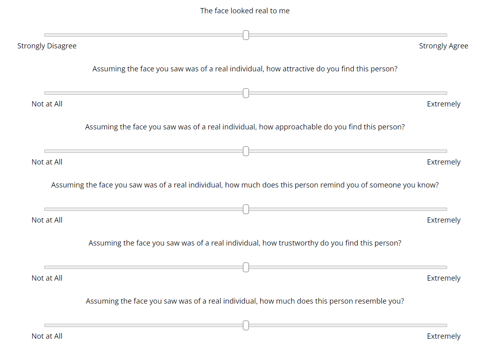

<!-- Load jsPsych-->
<!DOCTYPE html>
<html>

<head>
    <!--create title shown in tab; not the same as header on webpage-->
    <title>Real_Fake</title>
    <!--load the jsPsych library; set src to own path-->
    <script src="utils/jspsych/jspsych.js"></script>

    <!--Load all necessary plugins-->
    <script src="utils/jspsych/plugin-html-keyboard-response.js"></script>
    <script src="utils/jspsych/plugin-html-button-response.js"></script>
    <script src="utils/jspsych/plugin-fullscreen.js"></script>
    <script src="utils/jspsych/plugin-survey-text.js"></script>
    <script src="utils/jspsych/plugin-preload.js"></script>
    <script src="utils/jspsych/plugin-image-keyboard-response.js"></script>
    <script src="utils/jspsych/plugin-survey-multi-choice.js"></script>
    <script src="utils/jspsych/plugin-browser-check.js"></script>
    <script src="utils/jspsych/plugin-survey-likert.js"></script>
    <script src="utils/jspsych/plugin-image-button-response.js"></script>
    <script src="utils/jspsych/plugin-external-html.js"></script>

    <!--Load Stimuli and custom plugins-->
    <script src="https://realitybending.github.io/JSmisc/misc/utils.js"></script>
    <!--<script src = "utils/jspsych/plugin-jspsych-pavlovia-2021.js"></script>-->
    <script src="parameters.js"></script>
    <script src="utils/images.js"></script>
    <script src="utils/questions_demo.png"></script>
    <script src="utils/plugin-survey-multiple-slider.js"></script>

    <!-- Default CSS -->
    <link href="utils/jspsych/jspsych.css" rel="stylesheet" type="text/css" />
    <!--<script type="text/javascript" src="lib/vendors/jquery-2.2.0.min.js"></script>-->
    <style>
        #jspsych-image-keyboard-response-stimulus {
            /*adjust image stimuli params to fit screen*/
            height: auto;
            width: 80%;
        }

        body {
            /*Hide scrollbar while keeping it functional */
            overflow-y: scroll;
            overflow-x: flow;
        }

        Body::-webkit-scrollbar {
            display: none
        }

        /* set canvas to be full screen */
        .jspsych-content {
            max-width: 100%;
        }
    </style>
</head>

<body></body>

<script>
    timeline = []

    /* Initialize connection to Pavlovia ----*/
    // var pavloviaInfo

    // var pavlovia_init = {
    //     type: jsPsychPavlovia,
    //     command: "init",
    //     setPavloviaInfo: function (info) {
    //         console.log(info);
    //         pavloviaInfo = info;
    //     }
    // }

    // timeline.push(pavlovia_init)

    /* Initialize jsPsych ================================================================*/
    var jsPsych = initJsPsych({
        show_progress_bar: true,
        message_progress_bar: "Completion",
        on_finish: function () {
            jsPsych.data.displayData("json")
            jsPsych.data
                .get()
                .localSave(
                    "json",
                    `${jsPsych.data.get().values()[0]["participant_id"]
                    }_FF.json`
                )
        //    window.location = "https://app.prolific.co/submissions/complete?cc=XXXXX" /* redirect to prolific when experiment is finished */
        },
    });


    /* Initialize Experiment  =============================================================*/
    // Fullscreen Mode
    timeline.push({
        type: jsPsychFullscreen,
        fullscreen_mode: true
    })

    // Retrieve and save browser info
    var browser_check = {
        type: jsPsychBrowserCheck,
        data: {
            screen: "browser_info",
            version: "1.0",
            date: new Date().toLocaleDateString("fr-FR"),
            time: new Date().toLocaleTimeString("fr-FR"),
        },
        on_finish: function () {
            data = jsPsych.data.get().filter({screen: "browser_info"}).values()[0]
            jsPsych.data.addProperties({
                ["screen_height"]: data["height"],
                ["screen_width"]: data["width"],
            })
            for (var key in data) {
                if (
                    [
                        "vsync_rate",
                        "os",
                        "mobile",
                        "browser",
                        "browser_version",
                    ].includes(key)
                ) {
                    jsPsych.data.addProperties({
                        [key]: data[key],
                    })
                }
            }
            jsPsych.data.addProperties()
        },
    }
    timeline.push(browser_check)

    // Participant information
    var prolific_id = jsPsych.data.getURLVariable("PROLIFIC_PID")
    var jspsych_id = jsPsych.randomization.randomID(5)
    var participant_id = `${prolific_id}_${jspsych_id}`
    var study_id = jsPsych.data.getURLVariable("STUDY_ID")
    var session_id = jsPsych.data.getURLVariable("SESSION_ID")

    var participant_info = {
        type: jsPsychSurveyText,
        questions: [
            {
                prompt: "Please enter your age (in years, e.g., '31')",
                name: "age",
                required: true,
            },
            {
                prompt: "Please enter your country of birth (e.g., 'France')",
                name: "nationality",
                required: true,
            },
            {
                prompt: "Please enter your ethnicity (e.g., 'Caucasian')",
                name: "ethnicity",
                required: true,
            }
        ],
        on_finish: function () {
            jsPsych.data.addProperties({
                participant_id: participant_id,
                study_id: study_id,
                session_id: session_id,
            })
        },
        data: {
            screen: "demographics",
        },
    }

    var demographics = {
        type: jsPsychSurveyMultiChoice,
        questions: [
            {
                prompt: "What is your assigned sex?",
                options: ["Male", "Female", "Other", "Prefer not to say"],
                name: "sex",
                required: true
            },
            {
                prompt: "What is your highest completed education level?",
                options: ["University (doctorate)", "University (master)", "University (bachelor)", "High school", "Other", "Prefer not to say"],
                name: "education",
                required: true,
            }
        ],
        data: {
            screen: 'demographics'
        }
    }

    var sexual_orientation = {
        type: jsPsychSurveyMultiChoice,
        questions: [
            {
                prompt: "What sexual orientation do you most identify with?",
                options: ["Heterosexual", "Homosexual", "Bisexual", "Other"],
                name: "sexual_orientation",
                required: true
            }
        ],
        data: {
            screen: "demographics"
        }
    }

    var sexual_orientation_other = {
        type: jsPsychSurveyText,
        questions: [
            {
                prompt: "If you answered 'Other' in the previous question, please specify",
                name: "sexual_orientation_other",
                required: false,
            }
        ],
        data: {
            screen: "demographics"
        }
    }

    timeline.push(participant_info, demographics, sexual_orientation, sexual_orientation_other);

    // Instructions
    var general_instructions = {
        type: jsPsychHtmlButtonResponse,
        stimulus: "<div style='font-size:48px;'>Instructions</p></div>" +
            "<p>In this experiment, we are interested in the perception of <b>real</b> and <b>computer-generated</b> faces.</p>" +
            "<p>During the first part of the experiment, you will be asked to respond to a series of questionnaires about your personality traits </p>",
        choices: ['Continue'],
        data: {screen: "general_instructions"},
    };

    timeline.push(general_instructions)

    /*======================================================================*/
    /*---------------------Psychometric Scales------------------------------*/
    /*======================================================================*/

    /* Mini IPIP *==========================*/
    var IPIP_items = []
    for (const [index, element] of IPIP.entries()) {
        IPIP_items.push({
            prompt: element,
            name: IPIP_dim[index],
            ticks: scale2,
            required: false
        })
    }

    var IPIP6 = {
        type: jsPsychMultipleSlider,
        questions: IPIP_items,
        randomize_question_order: false,
        preamble: "<p>For this part of the questionnaire, we are interested in finding out more about your traits.</p>" +
            "<p>Please answer the following questions based on how accurately each statement describes you.</p>",
        require_movement: false,
        slider_width: 800,
        min: 0,
        max: 100,
        slider_start: 50,
        on_start: function () {
            ; (document.body.style.cursor = "auto"),
                (document.querySelector(
                    "#jspsych-progressbar-container"
                ).style.display = "inline")
        },
        data: {
            screen: 'IPIP6',
        }
    };

    timeline.push(IPIP6);

    /* Social Phobia and Social Interaction Anxiety *==========================*/
    var SIAS_items = []
    for (const [index, element] of SIAS_SF.entries()) {
        SIAS_items.push({
            prompt: element,
            name: "Social_Interaction_Anxiety" + (index + 1),
            ticks: scale2,
            required: false
        })
    }

    var SIAS = {
        type: jsPsychMultipleSlider,
        questions: SIAS_items,
        randomize_question_order: false,
        preamble:
            "<p>Please answer the following questions based on how accurately each statement describes you.</p>",
        require_movement: false,
        slider_width: 800,
        min: 0,
        max: 100,
        slider_start: 50,
        on_start: function () {
            ; (document.body.style.cursor = "auto"),
                (document.querySelector(
                    "#jspsych-progressbar-container"
                ).style.display = "inline")
        }
    };

    timeline.push(SIAS);

    var SPS_items = []
    for (const [index, element] of SPS_SF.entries()) {
        SPS_items.push({
            prompt: element,
            name: "Social_Phobia_" + (index + 1),
            ticks: scale2,
            required: false
        })
    }

    var SPS = {
        type: jsPsychMultipleSlider,
        questions: SPS_items,
        randomize_question_order: false,
        preamble:
            "<p>Please answer the following questions based on how accurately each statement describes you.</p>",
        require_movement: false,
        slider_width: 800,
        min: 0,
        max: 100,
        slider_start: 50,
        on_start: function () {
            ; (document.body.style.cursor = "auto"),
                (document.querySelector(
                    "#jspsych-progressbar-container"
                ).style.display = "inline")
        }
    };

    timeline.push(SPS);

    /* Narcissism *==========================*/
    var FFNI_items = []
    for (const [index, element] of FFNI_BF.entries()) {
        FFNI_items.push({
            prompt: element,
            name: FFNI_dim[index],
            ticks: scale2,
            required: false
        })
    }

    var FFNI = {
        type: jsPsychMultipleSlider,
        questions: FFNI_items,
        randomize_question_order: false,
        preamble: "<p>Please respond based on how much you agree or disagree with each each statement.</p>",
        require_movement: false,
        slider_width: 800,
        min: 0,
        max: 100,
        slider_start: 50,
        on_start: function () {
            ; (document.body.style.cursor = "auto"),
                (document.querySelector(
                    "#jspsych-progressbar-container"
                ).style.display = "inline")
        },
        data: {
            screen: 'FFNI-BF',
        }
    };

    timeline.push(FFNI);

    /* Paranoia *==========================*/
    var GPTS_items = []
    for (const [index, element] of R_GPTS.entries()) {
        GPTS_items.push({
            prompt: element,
            name: GPTS_dim[index],
            ticks: scale1,
            required: false
        })
    }

    var GPTS = {
        type: jsPsychMultipleSlider,
        questions: GPTS_items,
        randomize_question_order: false,
        preamble: "<p>In this part of the questionnaire, each statement below refers to thoughts and feelings you may have had <b>about others over the last month.</b></p>" +
            "<p>Please think about the last month and indicate the extent to which you think each of these feelings apply to you.</p>",
        require_movement: false,
        slider_width: 800,
        min: 0,
        max: 100,
        slider_start: 50,
        on_start: function () {
            ; (document.body.style.cursor = "auto"),
                (document.querySelector(
                    "#jspsych-progressbar-container"
                ).style.display = "inline")
        },
        data: {
            screen: 'GPTS',
        }
    };

    timeline.push(GPTS);

    /* Trait and State Anxiety *==========================*/
    var state_anxiety_items = []
    for (const [index, element] of STAIS_S.entries()) {
        state_anxiety_items.push({
            prompt: element,
            name: "State_Anxiety_" + (index + 1),
            ticks: scale2,
            required: false
        })
    }

    var STAIS_State = {
        type: jsPsychMultipleSlider,
        questions: state_anxiety_items,
        randomize_question_order: false,
        preamble: "<p>A number of statements which people have used to describe themselves are given below.</p>" +
            "Please read each statement and indicate <b>how you feel right now</b>, that is, at this moment. There are no right or wrong answers.</p>" +
            "<p>Do not spend too much time on any one statement but give the answer which seems to describe your present feelings best.</p>",
        require_movement: false,
        slider_width: 800,
        min: 0,
        max: 100,
        slider_start: 50,
        on_start: function () {
            ; (document.body.style.cursor = "auto"),
                (document.querySelector(
                    "#jspsych-progressbar-container"
                ).style.display = "inline")
        },
        data: {
            screen: 'STAIS_S',
        }
    }

    var trait_anxiety_items = []
    for (const [index, element] of STAIS_T.entries()) {
        trait_anxiety_items.push({
            prompt: element,
            name: "Trait_Anxiety_" + (index + 1),
            ticks: scale2,
            required: false
        })
    }

    var STAIS_Trait = {
        type: jsPsychMultipleSlider,
        questions: trait_anxiety_items,
        randomize_question_order: false,
        preamble: "<p>A number of statements which people have used to describe themselves are given below.</p>" +
            "Please read each statement and indicate <b>how you generally feel </b>. There are no right or wrong answers.</p>" +
            "<p>Do not spend too much time on any one statement but give the answer which seems to describe how you generally feel best.</p>",
        require_movement: false,
        slider_width: 800,
        min: 0,
        max: 100,
        slider_start: 50,
        on_start: function () {
            ; (document.body.style.cursor = "auto"),
                (document.querySelector(
                    "#jspsych-progressbar-container"
                ).style.display = "inline")
        },
        data: {
            screen: 'STAIS_T',
        }
    }

    timeline.push(STAIS_State, STAIS_Trait);

    /* Self Concept Clarity*==========================*/
    var self_concept_items = []
    for (const [index, element] of SCC.entries()) {
        self_concept_items.push({
            prompt: element,
            name: SCC_dim[index],
            ticks: scale1,
            required: false
        })
    }

    // Marcinkowska et al., 2021 (https://doi.org/10.1038/s41598-021-90473-3)
    self_concept_items.push({
        prompt: "How attractive would you say you are? <br>",
        name: "self_rated_general_attractiveness",
        ticks: ["Very Unattractive", "Very Attractive"],
        required: false
    })

    // Spielmann1 et al., 2019 (https://doi.org/10.1177/0265407519856701)
    self_concept_items.push({
        prompt: "How would you rate your own physical attractiveness relative to the average person? <br>",
        name: "self_rated_physical_attractiveness",
        ticks: ["Not at all Attractive", "Very Attractive"],
        required: false
    })
    // var self_concept = self_concept.map(item =>{
    //     if (item.name != 'SCC_6' && item.name != 'SCC_11')
    //         item["Reverse-Code"]= "False"
    //     else
    //         item["Reverse-Code"]= "True";
    //     return item;
    // });

    var self_concept_clarity = {
        type: jsPsychMultipleSlider,
        questions: self_concept_items,
        randomize_question_order: false,
        preamble: "<p>Please read the statements below carefully and indicate the extent to which you agree with each statement.</p>",
        require_movement: false,
        slider_width: 800,
        min: 0,
        max: 100,
        slider_start: 50,
        on_start: function () {
            ; (document.body.style.cursor = "auto"),
                (document.querySelector(
                    "#jspsych-progressbar-container"
                ).style.display = "inline")
        },
        data: {
            screen: 'SCC',
        }
    }

    timeline.push(self_concept_clarity);

    /* Magical Thinking *==========================*/
    var IBI_items = []
    for (const [index, element] of IBI_kingdon.entries()) {
        IBI_items.push({
            prompt: element,
            name: IBI_dim[index],
            ticks: scale1,
            required: false
        })
    }

    var IBI = {
        type: jsPsychMultipleSlider,
        questions: IBI_items,
        randomize_question_order: false,
        preamble: "<p>Please read the statements below carefully and indicate the extent to which each of these feelings apply to you.</p>",
        require_movement: false,
        slider_width: 800,
        min: 0,
        max: 100,
        slider_start: 50,
        on_start: function () {
            ; (document.body.style.cursor = "auto"),
                (document.querySelector(
                    "#jspsych-progressbar-container"
                ).style.display = "inline")
        },
        data: {
            screen: 'IBI',
        }
    }

    timeline.push(IBI);

    /* Intolerance to Uncertainty *==========================*/
    var IUS_items = []
    for (const [index, element] of IUS.entries()) {
        IUS_items.push({
            prompt: element,
            name: IUS_dim[index],
            ticks: scale2,
            required: false
        })
    }

    var uncertainty_intolerance_scale = {
        type: jsPsychMultipleSlider,
        questions: IUS_items,
        randomize_question_order: false,
        preamble: "<p>Please read the statements below carefully and indicate the extent to which you agree with each statement.</p>",
        require_movement: false,
        slider_width: 800,
        min: 0,
        max: 100,
        slider_start: 50,
        on_start: function () {
            ; (document.body.style.cursor = "auto"),
                (document.querySelector(
                    "#jspsych-progressbar-container"
                ).style.display = "inline")
        },
        data: {
            screen: 'IUS',
        }
    }

    timeline.push(uncertainty_intolerance_scale);

    /*=================================================================================*/
    /*=========================== Experiment Block ====================================*/
    /*=================================================================================*/
    // Preload image stimuli to prevent lagging during experiment
    timeline.push({
        type: jsPsychPreload,
        images: stimuli.map((a) => a.stimulus),  // stimuli is a variable defined in utils/images.js
    })

    // Experiment Instructions
    var task_instructions = {
        type: jsPsychHtmlButtonResponse,
        stimulus: "<p>In the second part of the experiment, images of faces will appear on the center of the screen briefly.</p>" +
            "<p>About half of these images are of <b>real faces</b> and the other half are <b>computer-generated</b>.</p>" +
            "<p>Among the images of artificial faces generated, only those that best matched the characteristics of real images used were selected for this experiment (e.g., same background, lighting etc.,).</p>" +
            "<p>Your task is to tell whether you think these facial images are <b>real</b> or <b>fake</b>.</p></br>",
        choices: ['Continue'],
        data: {screen: "task_instructions"}
    }

    var questionnaire_instructions = {
        type: jsPsychHtmlButtonResponse,
        stimulus: "<div style='text-align: left'><p>As we are interested in your <b>first impressions</b>, each image will be flashed <b>very briefly</b>.</p>" +
            "<p>After each image, you will be asked a series of questions, such as:</p>"+
            "<p>Whether you think the face you saw was real</p>"+
            "<p>How attracted you would be to someone who looks like that</p>" +
            "<p>How approachable you would find someone who looks like that</p>" +
            "<p>How much you would trust someone who looks like that</p>" +
            "<p>How much the face reminds you of someone you know</p>" +
            "<p>How much you think the face resembles yourself </p>" +
            "<p>Below is an example of the questions you will be asked after each image:</p></div><br>"+
            "<div style='float: center'></img>" +
            "<p>There are no right or wrong answers. Please respond intuitively based on your gut feelings.</p>" +
            "<p>Click 'Continue' to begin</p>",
        choices: ['Continue'],
        data: {screen: "questionnaire_instructions"}
    }

    timeline.push(task_instructions, questionnaire_instructions);


    var trial_number = 1 // trial indexing variable starts at 1 for convenience

    // Fixation cross
    var fixation = {
        type: jsPsychHtmlKeyboardResponse,
        stimulus: '<div style="font-size:60px;">+</div>',
        choices: "NO_KEYS",
        trial_duration: function () {
            return randomInteger(500, 1000)
        },
        // trial_duration: 0,  // for testing
        on_start: function () {
            ; (document.body.style.cursor = "none"),
                (document.querySelector(
                    "#jspsych-progressbar-container"
                ).style.display = "none")
        },
        save_trial_parameters: {
            trial_duration: true,
        },
        data: {screen: "fixation"},
    };

    //Stimuli block
    // var images = [];
    // for (var i = 10; i < 20; i++) {
    //     images.push({stimulus: "utils/Faces/NS1" + i + ".jpg"});
    // }

    // Loop through stimuli
    var stimuli_trial = {
        type: jsPsychImageKeyboardResponse,
        stimulus: jsPsych.timelineVariable('stimulus'),
        choices: "NO_KEYS",
        trial_duration: 500,   // jitter between 300 to 600?
        on_start: function () {
            ; (document.body.style.cursor = "none"),
                (document.querySelector(
                    "#jspsych-progressbar-container"
                ).style.display = "none")
        },
        save_trial_parameters: {
            trial_duration: true,
        },
        on_finish: function (data) {
            data.trial_number = trial_number
            trial_number += 1
        },
        data: {screen: "stimuli"},
    };

    var trait_items = []

    // Add Item on Perception of Realness
    trait_items.push({
        prompt: "The face looked real to me<br>",
        name: "Real_Fake",
        ticks: scale2,
        required: false
    })

    // Add Items on Confidence and Attractiveness
    for (const [index, element] of items.entries()) {
        trait_items.push({
            prompt: element,
            name: dimensions[index],
            ticks: scale1,
            required: false
        })
    }

    var questionnaire = {
        type: jsPsychMultipleSlider,  // this is a custom plugin in utils
        questions: trait_items,
        randomize_question_order: false,
       // preamble: "<p>Please respond based on your gut feeling. Do not spend too much time on any one statement.</p></br>",
        require_movement: false,
        slider_width: 1000,
        min: 0,
        max: 100,
        slider_start: 50,
        on_start: function () {
            ; (document.body.style.cursor = "auto"),
                (document.querySelector(
                    "#jspsych-progressbar-container"
                ).style.display = "inline")
        },
        data: {
            screen: 'questionnaire',
        }
    };

    // Add Items on Sociability, Approachability, Similarity, Trustworthiness and Familiarity
    // var trait_items2 = []
    // for (const [index, element] of items2.entries()) {
    //     trait_items2.push({
    //         prompt: element,
    //         name: dimensions2[index],
    //         ticks: scale1,
    //         required: false
    //     })
    // }

    // var questionnaire2 = {
    //     type: jsPsychMultipleSlider,
    //     questions: trait_items2,
    //     randomize_question_order: false,
    //     preamble: "<p>Below is a list of characteristics based on the image you just saw.</p>" +
    //         "<p>Please respond to each statement by indicating how much you agree or disagree with each characteristic.</p>" +
    //         "<p>Please respond based on your gut feeling. Do not spend too much time on any one statement.</p></br>",
    //     require_movement: false,
    //     slider_width: 800,
    //     min: 0,
    //     max: 100,
    //     slider_start: 50,
    //     on_start: function () {
    //         ; (document.body.style.cursor = "auto"),
    //             (document.querySelector(
    //                 "#jspsych-progressbar-container"
    //             ).style.display = "inline")
    //     },
    //     data: {
    //         screen: 'questionnaire',
    //     }
    // };

    //Loop through fixation, stimuli and questionnaire blocks
    var test_procedure = {
        timeline: [fixation, stimuli_trial, questionnaire],
        timeline_variables: stimuli,
        randomize_order: true,
        repetitions: 0
    };

    timeline.push(test_procedure);

    /*============================================================*/
    /*==================== End of Experiment =====================*/
    /*===========================================================*/
    var end_screen = {
        type: jsPsychHtmlButtonResponse,
        stimulus: "<p>You have come to the end of this study. </p>" +
            "<p>Thank you for participating!</p>",
        choices: ['End'],
    }

    timeline.push(end_screen)

    // Fullscreen mode
    timeline.push({
        type: jsPsychFullscreen,
        fullscreen_mode: false,
    })
    // /* Close connection to Pavlovia---*/
    // var pavlovia_finish = {
    //     type: jsPsychPavlovia,
    //     command: "finish",
    //     participantId: participant_id,
    //     completedCallback: function (){
    //         window.location.replace('https://app.prolific.co/submissions/complete?cc=XXXXX');
    //     }
    // }

    // timeline.push(pavlovia_finish)

    /* Run the experiment=====================================================*/

    jsPsych.run(timeline);


     // Add Real/Fake Questions
    //Real or Fake Trial Block
    // var real_fake_items = {
    //     type: jsPsychSurveyMultiChoice,
    //     questions: [{
    //         prompt: "The face you just saw is",
    //         name: 'Real_Fake',
    //         options: ["Real", "Fake"],
    //         required: false
    //     }],
    //     data: {screen: 'real_fake'},
    //     on_start: function () {
    //         ; (document.body.style.cursor = "auto"),
    //             (document.querySelector(
    //                 "#jspsych-progressbar-container"
    //             ).style.display = "inline")
    //     },
    //     on_finish: function (data) {
    //         data.trial_number = trial_number
    //         trial_number += 1
    //     }
    // };

</script>

</html>